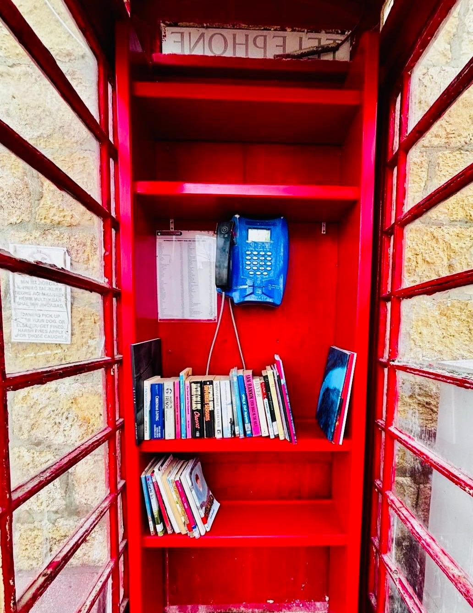

Kif bdejna
Fondazzjoni ta' Klula (VO/0420) began in 2005, when a group of Santa Luċija residents came together to make sure the village's heritage is not lost to time, and to promote its history, culture, traditions and customs. It was formally constituted by public deed in 2010. The name comes from Ta' Klula, one of the oldest parts of the village.
Since then it has evolved and is now led by a committee of residents and others who love the village, and Gozo in general. We are a registered voluntary organisation operating under the Commissioner for Voluntary Organisations.
What began as a commitment to one village has grown into something broader: a belief that Gozitan culture, in all its forms, deserves to be documented, celebrated, and shared with everyone who's curious enough to look.
Although rooted in Santa Luċija, the Fondazzjoni looks at Gozo as a whole, collaborating with organisations, artists, and communities across the island to celebrate and safeguard the broader Gozitan cultural identity.
X'nagħmlu
Throughout the year, the Fondazzjoni brings together residents and visitors around the Wine Festival, quarterly literary evenings with Inizjamed, and the candlelit Festival tad-Dawl on the feast of Santa Luċija. A programme that is growing.
Culture
Celebrating Gozitan culture through events, arts, and shared experiences that bring people together.
Heritage
Preserving and promoting the history, traditions, and natural environment of Santa Luċija and Gozo.
Community
Building connections between residents, visitors, and all those who care about this place and its future.
L-għanijiet tagħna
These principles guide everything the Fondazzjoni does.
- Safeguarding the tangible and intangible cultural heritage of Santa Luċija
- Promoting the village's history, traditions, and natural environment
- Supporting arts and cultural activities that engage the local community
- Building a welcoming space for residents, visitors, and the wider public
- Fostering partnerships with local, national, and international organisations

The Ta' Klula Free Library
Housed within the public telephone booth in Santa Luċija's main square, next to the parish church, is a small community library managed by the Fondazzjoni ta' Klula.
The collection includes books in various languages and across a wide range of subjects, suitable for both adults and children.
We invite you to take a book to enjoy at your leisure and kindly return it once you have finished, so others may benefit. You are also welcome to contribute to the collection by leaving a book for fellow readers.
Open to everyone: take a book, leave a book.
Il-kumitat
European Destination of Excellence
Santa Luċija, Gozo was awarded the European Destination of Excellence (EDEN) by the European Commission in 2008, one of only eight destinations ever selected across Malta and Gozo. The award recognised the village's outstanding commitment to sustainable tourism and its rich local intangible heritage. This distinction was awarded through the work of the Fondazzjoni.

2008 · Winner
Malta & Gozo
Ingħaqad magħna
Join the Fondazzjoni as a member, volunteer, or supporter. Every contribution of time, skill, or resources helps us keep Gozitan culture alive.